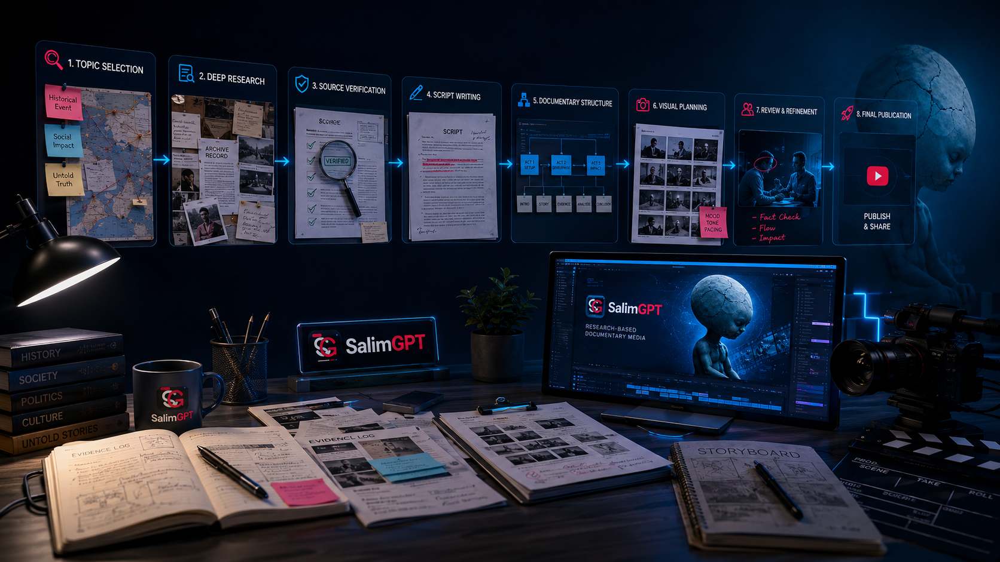

বিষয় নির্বাচন
কোন বিষয়টি গবেষণার উপযুক্ত, দর্শকের জন্য গুরুত্বপূর্ণ এবং documentary format-এ গভীরভাবে ব্যাখ্যা করা সম্ভব—তা নির্ধারণ।
SalimGPT-এর একটি ডকুমেন্টারি সরাসরি script লেখা বা video editing দিয়ে শুরু হয় না। একটি বিষয়কে প্রথমে বোঝা, গবেষণা করা, গুরুত্বপূর্ণ তথ্য যাচাই করা, narrative তৈরি করা এবং তারপর voice, visual ও editing-এর মাধ্যমে পূর্ণাঙ্গ documentary-তে রূপ দেওয়া হয়।

একটি আকর্ষণীয় documentary বানানোর জন্য শুধু সুন্দর footage বা দ্রুত editing যথেষ্ট নয়। যদি research দুর্বল হয়, তথ্যের প্রেক্ষাপট অসম্পূর্ণ হয় বা script-এর narrative পরিষ্কার না হয়—তাহলে visual quality ভালো হলেও documentary-এর ভিত্তি দুর্বল থেকে যায়।
এই কারণে SalimGPT-এর workflow-এ production-এর আগে research এবং verification-এর ওপর বিশেষ গুরুত্ব দেওয়া হয়। তারপর সেই গবেষণাকে এমন একটি narrative-এ সাজানো হয়, যা দর্শককে শুরু থেকে শেষ পর্যন্ত বিষয়টির ভেতরে ধাপে ধাপে নিয়ে যায়।
Research আগে। Storytelling পরে। Final publication তারও পরে।একটি SalimGPT documentary সাধারণত নিচের ধারাবাহিক প্রক্রিয়ার মধ্য দিয়ে যায়। বিষয়ভেদে কিছু ধাপ বড় বা ছোট হতে পারে, কিন্তু research এবং final review-এর গুরুত্ব অপরিবর্তিত থাকে।
কোন বিষয়টি গবেষণার উপযুক্ত, দর্শকের জন্য গুরুত্বপূর্ণ এবং documentary format-এ গভীরভাবে ব্যাখ্যা করা সম্ভব—তা নির্ধারণ।
বিষয়টির মূল ইতিহাস, গুরুত্বপূর্ণ ঘটনা, terminology, সময়রেখা এবং সম্ভাব্য source landscape বোঝা।
বই, গবেষণাপত্র, institutional document, archive, report এবং অন্যান্য প্রাসঙ্গিক উৎস থেকে বিস্তারিত তথ্য সংগ্রহ।
গুরুত্বপূর্ণ claim, date, historical event এবং numerical information সম্ভব হলে একাধিক নির্ভরযোগ্য উৎসের সঙ্গে মিলিয়ে দেখা।
যাচাইকৃত ও প্রাসঙ্গিক তথ্যকে SalimGPT-এর নিজস্ব ভাষা, narrative structure ও explanation flow-তে লেখা।
Final script অনুযায়ী AI-generated বা synthetic narration তৈরি, pronunciation, pacing এবং delivery প্রয়োজন অনুযায়ী ঠিক করা।
কোন narration-এর সঙ্গে কোন image, footage, map, graphic, archive বা AI-generated visual প্রয়োজন তা পরিকল্পনা।
Voice, visual, graphic, sound এবং documentary pacing-কে একসঙ্গে সাজিয়ে সম্পূর্ণ video sequence তৈরি করা।
তথ্য, script, narration, visual context, pacing, সম্ভাব্য ভুল এবং overall presentation পুনরায় পরীক্ষা।
Final video, title, thumbnail, description এবং প্রয়োজনীয় publication information প্রস্তুত করে দর্শকের জন্য প্রকাশ করা।
SalimGPT-এ কোনো বিষয় শুধু trending হওয়ার কারণে নির্বাচন করা বাধ্যতামূলক নয়। একটি documentary topic নির্বাচন করার সময় দেখা হয়—বিষয়টির যথেষ্ট historical, scientific, social বা explanatory depth আছে কি না।
একটি শক্তিশালী topic সাধারণত এমন হয়, যেখানে দর্শকের পরিচিত ধারণার পেছনে আরও বড় ইতিহাস, পরিবর্তন, বিতর্ক বা অজানা context রয়েছে।
এরপর preliminary research করে দেখা হয়, বিষয়টির ওপর নির্ভরযোগ্য তথ্য পাওয়া যায় কি না এবং সেই তথ্য দিয়ে একটি সুসংগঠিত documentary narrative তৈরি করা সম্ভব কি না।
প্রথম ধাপে বিষয়টির মৌলিক ধারণা, প্রধান সময়রেখা, গুরুত্বপূর্ণ ব্যক্তি, ঘটনা, terminology এবং potential research direction নির্ধারণ করা হয়।
এরপর গুরুত্বপূর্ণ ঘটনা, origin, transformation, contemporary impact এবং relevant evidence নিয়ে আরও বিস্তারিত গবেষণা করা হয়।
কোন তথ্য কোন ধরনের source থেকে এসেছে এবং কোন claim-এর জন্য আরও শক্তিশালী reference প্রয়োজন—তা আলাদা করে চিহ্নিত করা হয়।
Internet search-এ কোনো তথ্য পাওয়া গেলেই সেটিকে final documentary fact হিসেবে গ্রহণ করা হয় না। বিশেষ করে গুরুত্বপূর্ণ historical claim, date, statistic, cause-effect relationship এবং controversial information-এর ক্ষেত্রে source quality বিবেচনা করা হয়।
যেখানে সম্ভব, একটি গুরুত্বপূর্ণ claim অন্য স্বাধীন বা অধিক নির্ভরযোগ্য source-এর সঙ্গে মিলিয়ে দেখা হয়। একই সঙ্গে primary information, institutional source এবং secondary interpretation-এর পার্থক্য বোঝার চেষ্টা করা হয়।
তথ্য যাচাইয়ের সম্পূর্ণ নীতিSource-এর paragraph বা অন্য documentary-এর script হুবহু নিয়ে SalimGPT-এর script তৈরি করা হয় না। Research থেকে পাওয়া factual information বোঝার পর একটি নিজস্ব narrative structure তৈরি করা হয়।
Script-এর কাজ শুধু তথ্য তালিকাভুক্ত করা নয়। কোন প্রশ্ন দিয়ে শুরু হবে, historical origin কখন আসবে, কোথায় suspense বা curiosity তৈরি হবে, কোন context আগে জানা প্রয়োজন এবং শেষ পর্যন্ত দর্শক কী বুঝবেন— এসবের ওপর narrative flow তৈরি করা হয়।
তথ্য এবং ব্যক্তিগত বা editorial interpretation এক নয়। যেখানে ব্যাখ্যা বা মতামত থাকে, সেটিকে factual claim-এর বিকল্প হিসেবে ব্যবহার না করার চেষ্টা করা হয়।

একটি script যখন research ও editorial review-এর পর production-ready হয়, তখন voice এবং visual production শুরু হয়।
কোন scene-এ কী ধরনের image প্রয়োজন, কোথায় AI-generated visual দরকার, কোথায় explanatory graphic বা archive ব্যবহার করা হবে এবং narration-এর কোন অংশে visual transition প্রয়োজন— এসব আগে থেকেই পরিকল্পনা করা হয়।
এর উদ্দেশ্য হলো visual যেন কেবল decorative element না হয়ে, narration বোঝার একটি সক্রিয় অংশ হয়।
SalimGPT-এর narration-এ AI-generated বা synthetic voice ব্যবহার করা হতে পারে। তবে AI voice নিজে documentary-এর বক্তব্য তৈরি করে না।
Final script, pronunciation, sentence pacing, pause, emphasis এবং overall tone documentary-এর narrative অনুযায়ী নির্ধারণ করা হয়।
অর্থাৎ voice একটি production technology; research, script এবং editorial direction তার আগে নির্ধারিত থাকে।
SalimGPT-এ visual শুধু screen পূরণ করার জন্য ব্যবহার করা হয় না। কোন visual দর্শককে কী বোঝাতে সাহায্য করবে—তা narration-এর সঙ্গে মিলিয়ে দেখা হয়।
প্রয়োজন অনুযায়ী historical, conceptual বা illustrative image তৈরি করা হতে পারে।
সরাসরি footage না থাকলে narration বোঝাতে কাছাকাছি অর্থবোধক scene তৈরি করা হতে পারে।
প্রয়োজন অনুযায়ী archival, public-domain বা আইনসম্মতভাবে ব্যবহারযোগ্য visual ব্যবহার হতে পারে।
স্থান, সময়রেখা, তুলনা বা জটিল ধারণা সহজ করতে map, diagram ও explanatory graphic।
Crop, framing, motion, timing বা composition পরিবর্তন করে documentary-এর visual language-এ মানানো।
একটি illustrative visual যেন অপ্রয়োজনীয়ভাবে factual archive হিসেবে বিভ্রান্ত না করে তা বিবেচনা।
Editing-এর সময় voice এবং visual কেবল পাশাপাশি বসানো হয় না। Narration-এর rhythm, visual change, information density এবং viewer attention একসঙ্গে বিবেচনা করা হয়।
কোথায় scene দীর্ঘ হবে, কোথায় দ্রুত transition প্রয়োজন, কোন তথ্যের জন্য map বা text support দরকার এবং কোথায় visual silence বেশি কার্যকর—এসব সিদ্ধান্ত editing-এর অংশ।
লক্ষ্য হলো documentary-টি যেন অপ্রয়োজনীয়ভাবে ধীর না হয়, আবার এত দ্রুতও না হয় যে দর্শক তথ্য বুঝতে না পারেন।
SalimGPT documentary-এর presentation এমনভাবে গঠন করার চেষ্টা করা হয়, যাতে দর্শকের curiosity ধাপে ধাপে সামনে এগোয়।
কিন্তু viewer retention-এর জন্য factual context বাদ দেওয়া, শুধু sensational claim ব্যবহার করা বা বিভ্রান্তিকরভাবে scene সাজানো production-এর উদ্দেশ্য নয়।
বরং hook, question, visual rhythm, historical progression এবং narrative payoff-এর মাধ্যমে পুরো video-জুড়ে আগ্রহ ধরে রাখার চেষ্টা করা হয়।
গুরুত্বপূর্ণ claim ও date আবার পরীক্ষা করা।
ভাষা, context এবং narrative consistency দেখা।
pronunciation, pacing এবং narration error পরীক্ষা।
visual ও narration-এর context মিলছে কি না।
pacing, transition এবং overall flow পরীক্ষা।
title, thumbnail ও final publication readiness দেখা।
SalimGPT-এর production-এ AI research assistance, language support, image generation, illustrative footage, synthetic narration বা অন্যান্য technical কাজে সহায়ক হতে পারে।
কিন্তু কোন topic নিয়ে documentary হবে, কোন source গ্রহণযোগ্য, কোন তথ্য script-এ থাকবে, কী interpretation দেওয়া হবে, কোন visual ব্যবহার করা হবে এবং final video publish করা হবে কি না— এসব বিষয়ে চূড়ান্ত editorial control মানুষের অধীনে থাকে।
সম্পূর্ণ AI নীতি পড়ুনSalimGPT-এর research, script direction, editorial judgement, visual planning, editing decision এবং final publication-এর সামগ্রিক creative direction পরিচালনা করেন Mohammad Salim।
Production tool পরিবর্তিত হতে পারে, নতুন AI technology যুক্ত হতে পারে, editing workflow আরও উন্নত হতে পারে— কিন্তু final documentary-এর দায়িত্ব মানুষের editorial review-এর অধীনেই থাকে।
পরিচালক সম্পর্কে বিস্তারিতবিষয় নির্বাচন থেকে publication পর্যন্ত প্রতিটি ধাপ পরবর্তী ধাপকে প্রভাবিত করে। দুর্বল research একটি দুর্বল script তৈরি করতে পারে; দুর্বল script visual-কে উদ্দেশ্যহীন করতে পারে; এবং দুর্বল final review ভালো production-কেও ভুল তথ্যের ঝুঁকিতে ফেলতে পারে।
এই কারণে SalimGPT পুরো process-কে একটি connected system হিসেবে দেখে— যেখানে research, verification, storytelling, technology এবং human editorial judgement একসঙ্গে কাজ করে।
SalimGPT — গবেষণা থেকে গল্প, গল্প থেকে জ্ঞান।